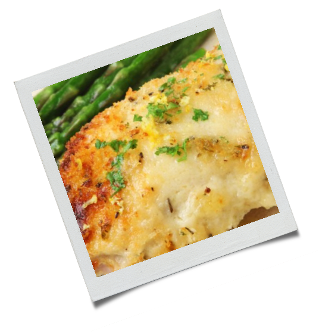

1 kg de coxa e sobrecoxa

2 pacotinhos de creme de cebola
300 g maionese

Lave bem e separe as coxas das sobrecoxas;
Passe os pedaços do frango no creme de cebola
um a um de forma que o pedaço fique coberto com o creme;
Coloque os pedaços em uma assadeira média ajeitando de forma que fiquem perto um do outro;
Cubra os pedaços com maionese;
Leve para assar em forno médio 180º C por aproximadamente 2 horas, ou até ficar bem douradinho.